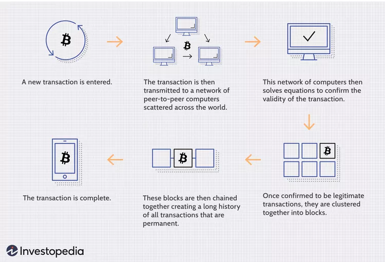

Understanding Blockchain Technology !
- Monick S (URK23CS1167)

Blockchain is a decentralized digital ledger that securely stores records across a network of computers in a way that is transparent, immutable, and resistant to tampering.
Each "block" contains data, and blocks are linked in a chronological "chain."
What is it ?
A blockchain is a distributed database or ledger shared across a computer network's nodes.
They are best known for their crucial role in cryptocurrency systems, maintaining a secure
and decentralized record of transactions, but they are not limited to cryptocurrency uses.
Blockchains can be used to make data in any industry immutable—meaning it cannot
be altered.
Since a block can’t be changed, the only trust needed is at the point where a
user or program enters data. This reduces the need for trusted third parties, such as auditors
or other humans, who add costs and can make mistakes.
Since Bitcoin's introduction in 2009,
blockchain uses have exploded via the creation of various cryptocurrencies, decentralized
finance (DeFi) applications, non-fungible tokens (NFTs), and smart contracts.
How Does a Blockchain Works ?
You might be familiar with spreadsheets or databases. A blockchain is somewhat similar because it is a database where information is entered and stored. The key difference between a traditional database or spreadsheet and a blockchain is how the data is structured and accessed.
A blockchain consists of programs called scripts that conduct the tasks you usually would in a database: entering and accessing information, and saving and storing it somewhere. A blockchain is distributed, which means multiple copies are saved on many machines, and they must all match for it to be valid.
The Bitcoin blockchain collects transaction information and enters it into a 4MB file called ablock (different blockchains have different size blocks). Once the block is full, the block data is run through a cryptographic hash function, which creates a hexadecimal number called the block header hash.
The hash is then entered into the following block header and encrypted with the other information in that block's header, creating a chain of blocks, hence the name “blockchain.”
Transaction Process
Transactions follow a specific process, depending on the blockchain. For example, on
Bitcoin's blockchain, if you initiate a transaction using your cryptocurrency wallet—the
application that provides an interface for the blockchain—it starts a sequence of events.
In Bitcoin, your transaction is sent to a memory pool, where it is stored and queued until
a miner picks it up. Once it is entered into a block and the block fills up with transactions,
it is closed, and the mining begins.
Every node in the network proposes its own blocks in
this way because they all choose different transactions. Each works on their own blocks,
trying to find a solution to the difficulty target, using the "nonce," short for number used
once.
The nonce value is a field in the block header that is changeable, and its value
incrementally increases with every mining attempt. If the resulting hash isn't equal
to or
less than the target hash, a value of one is added to the nonce, a new hash is generated,
and so on. The nonce rolls over about every 4.5 billion attempts
(which takes less than
one second) and uses another value called the extra nonce as an additional counter.
This continues until a miner generates a valid hash, winning the race and receiving the reward.

Fast Fact
Generating these hashes until a specific value is found is the "proof-of-work" you hear so much about—it "proves" the miner did the work.
The sheer amount of work it takes to validate the hash is why the Bitcoin network consumes so much computational power and energy.
Once a block is closed, a transaction is complete. However, the block is not considered confirmed until five other blocks have been validated.
Confirmation takes the network about one hour to complete because it averages just under 10 minutes per block (the first block with your transaction
and five following blocks multiplied by 10 equals 60 minutes).
Not all blockchains follow this process. For instance, the Ethereum network randomly chooses one validator from all users with ether staked to validate blocks,
which are then confirmed by the network. This is much faster and less energy intensive than Bitcoin's process.